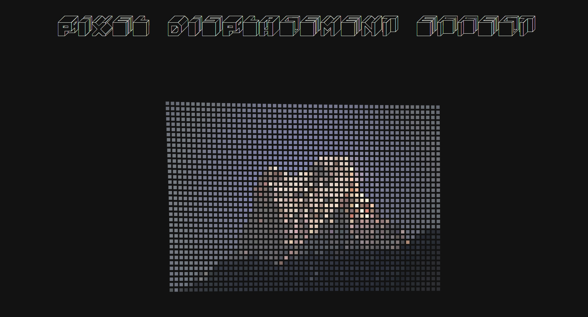

The first thing I paid attention to is the 4 division cursor effect where the cursor acts as the centre of 4 divisions, and when the cursor passes over certain words, it then changes accordingingly to the direction in which you move the cursor, whilst each division is distinct with its on distinct colour. This was eye catching as it was a unique effect that I had never interacted with before and through its uniqueness it encourage user interaction by encouraging users to explore the different variations of sentences and words that change as the user moves the mouse around.
I most enjoyed the cursor displacement effect' which requires the user to move the cursor around a box of pixels where the cursor moved the pixels around accordingly in a circular distorted way. This was the most engaging part of the site for me as a user as it was unique and unlike other features I had experienced on websites before and it served a fun and interactive purpose to entertain users.
The cursor was a major element in interactive elements within the website, and thus one of the main actions I undertook was moving the cursor around in circles and exploring each area in what it presents. This involved moving the cursor around in the 4 division effect and reading the text multiple times as words changed and moving the cursor around through the pixel displacement effect. There were also animations and effects embedded into text when the mouse hovers over the words towards the bottom of the page which included the developer's name and various forms of contacts which were activiated when the mouse hovers over the text, further emphasising on the frequent and vital use of the cursor in ways that didnt involve just scrolling.
I believe the intended goal here was for the web designer/developer to showcase their design and interactive development abilities to a wide range of users that may preferably be clients. The developer aims to present various unique and engaging features throughout the experience and journey of the website to not only present their skills but to also engage and entertain users whilst leaving a memorable and lasting impression.
The web page features various unique features and aspects that display the web developer's skill and creativity in web development. Such unique features involved high levels of repeated interactivity which encouraged users to repeatedly moving the cursor around the web page in order to actively interact with varying elements such as the ones previously mentioned. Through this the developer displays their abilities of creating engagement.
The features on this web page will encourage users to repeatedly interact with the webpage numerous times in a temporary manner. The developer especially utilises user interactivity as a core aspect of features such as the 4 division cursor effect where the user is required to move the cursor around in four directions in order to unveil all the different variations of the sentences present. The colour that changes with it is also visually engaging and encourages the user to continue interacting with the feature even after reading all variations. The pixel displacement effect also solely relies on user interactivity to the extent of their engagement. These features are overall engaging in a temporary and recreational manner.
This website can be a point of reference for possible clients to look back at consider the web developer as an artist to be hired by possible clients. The website was not built in mind to offer services that can be run through the site, instead it serves purpose as a mini portfolio that showcases the abilities the developer possesses that can be offered to clients who are interested in the developer's services.
The pixel displacement effect can be referencing aspects of online games that aim to act as a fidget activity to make a user feel stimulated. Whilst the 4 division cursor effect with the changing nature of words can also be references to fill in the blank sentence games that can keep an audience guessing, a contemporary example being the game cards against humanity. The text animations present also bear resemblance to animations and quirks present within the cozy game genre, and thr aestehtics and animations are also similar to the one present in mobile games such as colour switch. And thus overall it seems the developer has referenced aspects of other existing forms of media that involve a sense of playfullness within them, which could be communicating a core aspect of their style and individuality present in their designs.
The fun nature of the features present within the website that aim to entertain and engage can indicate that the developer would have wanted users to act in a self-indulgent way when interacting with features. Especially communicated through references of playful elements in other forms of media. The website serves to be an amusing and enjoyable experience for casual audiences and professional clients alike and channels a sense of awe and playfulness for users to immerse themselves into.
The main aim by the developer would have been to make users feel entertained and feel a sense of awe and wonder when interacting with unique uncommon features that are not present or indicative of common contemporary commercial websites that users may frequently interact with. For example the presence of the pixel displacement effect allows users to interact with the feature in a self indulgent manner that makes them feel satisfied. References to playful aspects can also invoke a sense of nostalgia in the sense that they channel the amusement and desire to want to play around with and explore such creative and interactive features; packaged in a new and modern way.
The most frustrating part of the website is that the use of such overly interactive and unique features can lead the website to be a bit laggy at times. Especially the text at the bottom of the page which involve options such as 'Email', 'Line' and Linkedin' which all have in built animations that occur when the mouse hovers over the text before the user can click on it. It can also make it hard to distinguish whether the text option is clickable as all the text including "Feel free to contact me" and clickable options such as 'Email' (etc.) are the same text size and font with it all having its own animation, thus making it hard for a user to navigate and identify the clickable aspects. The website also heavily relies on the movement of the mouse for such programmed and animated features to occur which may lead touch screen users to have a vastly different user experience.
The animations on the text are visually appealing and engaging to interact it as the animation is programmed smoothly. However the text displacement effect is especially satisfying to interact with as its extremely engaging and entertaining and extremely well coded. Its a feature that is not much present commonly thus making it unique as users can repeatedly move the mouse around to observe as pixels move and distort according to user's movements.